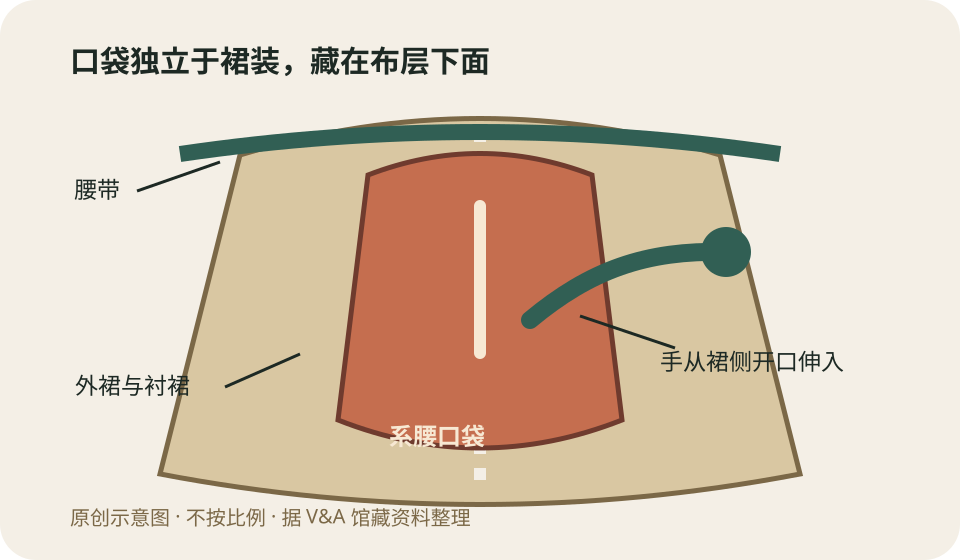
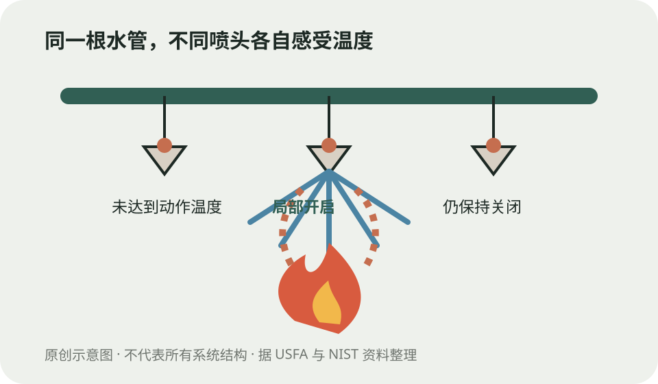
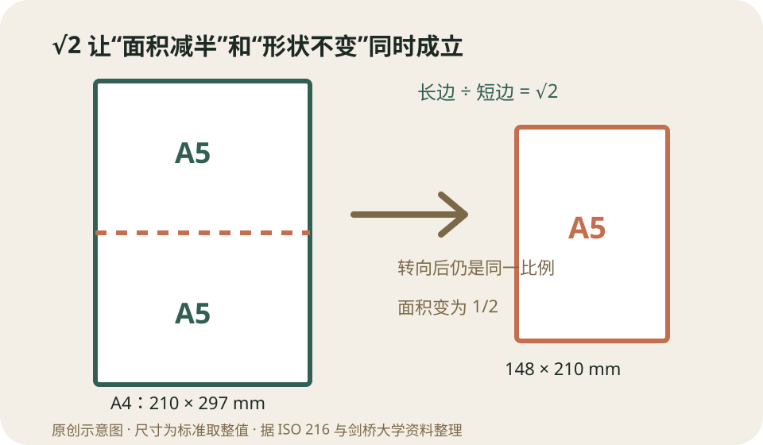

今日热点 01 · 消费 / 广告合规
北京发布食品广告指引，修图、功效话术和“特供”都被点名
国家市场监管总局8月10日转发消息称，北京市市场监管局已发布食品广告指引，以15条负面清单梳理广告内容、证明材料和发布链条责任。它是对现行规则的操作化说明，不是给食品另创一套审批制度。
新进展
从“不能虚假”往前走一步，告诉发布者具体查什么
市场监管总局8月10日介绍，这份指引要求食品广告与真实的产地、规格、净含量、配料等相符，相关主张要能说明证据来源。它还点名虚构“特供”“专供”、伪造生产或保质期信息，以及通过修图、渲染等方式夸大食品外观。
指引同时梳理广告主、广告经营者、发布者和代言人的责任。对商家来说，重点不只是成片里有没有一句夸张话，还包括委托、素材、审核与投放各环节能否留下可核对的依据。
不要误读
这不是“今天以前都能做”，而是把既有法律禁区列得更细
《广告法》原本就禁止普通食品广告涉及疾病治疗功能，也限制保健食品的功效保证和代言。酒类广告不得出现饮酒动作、诱导无节制饮酒，也不能暗示消除焦虑或增加体力。新指引的价值，在于把分散规则放进食品广告的实际工作流。
因此，“15条负面清单”不等于新增15种违法行为，更不代表所有食品广告都要重新审批。具体个案仍要看产品属性、广告内容、证据和适用法律；指引不能替代执法认定。
这与你有什么关系
看到健康承诺，先查它卖的是普通食品、保健食品还是药品
同一句“改善某种症状”，放在不同产品上适用的规则并不一样。普通食品不能宣传疾病预防、治疗功能；保健食品也不能代替药物，其广告内容受注册或备案资料约束。把包装上的产品类别看清，比先争论某个网红说得像不像真的更有效。
遇到“内部专供”“祖传治病”“喝完缓解焦虑”或图片与实物明显不符，可以保存页面、订单、聊天和实物照片。投诉时提供完整投放页面和购买链路，通常比只截一句口号更便于核查。
聊天时可以补一句
广告合规越来越像一条证据链，而不只是文案改词
直播切片、达人口播、平台信息流和商品详情页可能由不同主体制作，却共同影响一次购买。只让文案避开几个敏感词，无法解决配料、产地、功效依据和实物外观互相对不上的问题。
真正的变化是审核往前移：主张从哪里来，图片改了什么，代言人能否推荐，发布者是否核验，都要在投放前说得清。消费者看到的仍是一条广告，监管要追的却是整条制作与传播链。
食品广告指引没有另造法律，它把产品属性、证据和发布责任放到一张检查表里。
查看事实与延伸来源
国家市场监管总局8月10日：北京发布食品广告指引及15条负面清单
北京市市场监管局7月15日：指引征求意见稿与起草说明
人民网转北京青年报：征求意见稿的广告链责任与主要禁区
国家市场监管总局：中华人民共和国广告法现行条文
今日热点 02 · 公共卫生 / 政策
特朗普要求拆分并拉开儿童疫苗接种，行政令不等于接种表已经改完
美联社8月10日报道，美国总统特朗普签署行政令，主张每种儿童疫苗分开就诊，并把麻疹、腮腺炎、风疹联合疫苗拆成三针；美国目前没有面向儿童的三种单价疫苗可直接替换，校内接种要求仍主要由各州决定。
发生了什么
命令提出方向，但从文件到门诊中间还有多道程序
美联社称，行政令要求卫生部门调整建议、加强研究，并提倡把不同疫苗安排在不同就诊日。特朗普还再次把疫苗与自闭症联系起来。白宫没有为拆分MMR或拉开接种提供新的临床证据。
这不意味着家长第二天就能预约三种单价针剂。美联社指出，美国目前没有儿童用单价麻疹、腮腺炎和风疹疫苗可供这种替换；产品供应、专业指南、保险覆盖和各州校规也各有程序。
证据怎么说
“疫苗导致自闭症”不是尚待两边各打五十大板的问题
世界卫生组织2025年复核2010至2025年的31项初级研究，并结合多项荟萃分析，结论仍是现有高质量证据不支持疫苗与自闭症之间存在因果关系。早期把MMR与自闭症相连的论文已被撤回。
美国卫生与公众服务部现有面向家长的说明也写明，拉开接种没有已知好处，按推荐时间接种能更早获得保护。一次就诊可以安全接种多种疫苗，是经过研究和持续安全监测的安排。
为什么“分开打”不是中性选择
多一次等待，就多一段尚未获得保护的时间
把三种联合疫苗拆开，不只是把同样的针换个日历位置。孩子需要更多次就诊，也可能在两次预约之间感染尚未接种所针对的疾病；若后续漏约，还可能无法完成全程。
联合疫苗的意义之一，就是在合适年龄用较少的就诊次数完成多项保护。是否需要因既往严重过敏、免疫状况或其他医学原因调整，应由熟悉病史的临床人员判断，而不是照着政治讲话自行延后。
这与你有什么关系
在规则真正变化前，不要把新闻标题当成个人接种建议
这项行政令直接影响的是美国政策体系，中国的免疫程序不会因此自动改变。即使身在美国，也应核对当地卫生部门、儿科专业组织和医生给出的最新安排，分清总统命令、联邦建议、州级入学要求与门诊可用产品。
若家长担心同时接种、发热反应或既往病史，可以把具体疫苗名、年龄和既往反应带给医生讨论。可靠的风险沟通应说明不接种或延后的风险，而不是只谈注射当天的不适。
行政令能推动政策程序，却不能替代产品供应、专业指南和个体医疗判断。
查看事实与延伸来源
美联社8月10日：行政令要求拆分并拉开儿童疫苗接种
世界卫生组织：2025年证据复核再次确认疫苗与自闭症无因果关系
美国卫生与公众服务部：按推荐时间接种及无需刻意拉开
美国儿科学会：2026年儿童与青少年免疫程序政策声明
今日热点 03 · 灾害 / 地震
哥伦比亚7.4级地震已致至少111人死亡，救援数字仍会变
哥伦比亚西部8月10日发生7.4级地震。哥伦比亚地质调查机构把震源定位在乔科省圣何塞德尔帕尔马附近、深约96公里；美联社截至当日报道至少111人死亡、87人受伤，约1600座建筑受损。
已确认与未确认
震级和位置相对稳定，伤亡与建筑统计仍是滚动值
哥伦比亚地质调查机构的更新通报给出当地时间8月10日7时34分、震级7.4、深度96公里，位置靠近乔科省圣何塞德尔帕尔马。美联社汇总地方当局数据称，里萨拉尔达和考卡山谷等地伤亡严重。
截至报道时，至少61座建筑倒塌，救援人员仍在瓦砾中搜索。灾后最初几天，重复上报、通信中断和新发现都可能改变总数；“至少”不是修辞，而是在提醒这是一张尚未结算的表。
为什么影响广
较深震源让震动传得更远，却不能单独预测地面损失
震源深约96公里，地震波到达地表前传播距离较长，通常会使很大范围内有感；相较同震级的浅源地震，震中附近的极端地表震动未必同样集中。但这只是一般规律，不能反推某座建筑是否安全。
实际损失还取决于断层机制、土壤放大效应、建筑年代与结构、人口暴露和救援条件。震级描述释放能量的规模，不是某个城市的破坏等级；同一场地震在不同地点会有不同烈度。
救援阶段看什么
余震、受损建筑和道路中断，比“下一次几级”更可操作
主震后发生余震是正常现象，具体时间和强度无法精确预报。对现场人员来说，更现实的判断是：建筑是否经专业检查、燃气电力是否切断、道路和桥梁是否开放，以及当地应急部门是否允许返回。
倒塌区的信息也会被短视频放大。核对时应先找明确地点与拍摄时间，再对照地质机构和地方应急通报；一段真实画面也不能代表整个城市，更不能据此估算伤亡。
把视野推远
灾害不是地震的同义词，脆弱性决定能量如何变成伤亡
哥伦比亚处在多个板块相互作用的区域，地震并不罕见，但强震造成的后果仍受城市建设与社会条件影响。抗震规范、既有建筑加固、医院和通信韧性，会把同样的自然事件导向不同结果。
因此，灾后讨论不能只问“为什么没预测到”。地震的精确短期预测仍不可行，能提前做的是风险制图、工程设防、演练、物资与信息备份。真正可检验的准备，大多发生在地面，而不是震源里。
震级讲能量，烈度讲某地摇得多强，灾害损失还要乘上暴露与脆弱性。
查看事实与延伸来源
美联社8月10日：哥伦比亚7.4级地震伤亡、建筑损毁与救援进展
哥伦比亚地质调查机构：地震目录与事件参数查询
哥伦比亚地质调查机构：国家地震危险与风险资料
涉猎 01 · 服装史 / 日常设计
女装口袋曾经不是缝在衣服上，而是系在腰间的一只大袋
17世纪中叶到19世纪，欧洲女性常把梨形口袋单只或成对系在腰间，再从裙子开口伸手取物。许多实物约40厘米长、30厘米宽；它与手袋长期并存，后来随服装轮廓和使用方式改变而式微。

系腰口袋独立于裙装，绳带固定在腰间，手从外裙和衬裙的开口伸入。原创示意图，不按比例；据V&A馆藏资料整理。
它怎样穿
口袋是独立配件，裙子只负责留下入口
维多利亚与阿尔伯特博物馆介绍，系腰口袋大约从1650年起普遍使用。它通常呈梨形，正面有竖向开口，用绳带系在腰上；外裙和衬裙在侧面也开口，手可以穿过布层摸到口袋。它可以藏在裙下，也能由劳动女性放在围裙内侧方便取用。
这种口袋容量并不小，常能装钥匙、钱币、针线、眼镜、小刀和书信。口袋可以成对佩戴，也能在换衣服时整体取下；对没有独立房间和带锁家具的人，贴身携带本身就是一种保管方式。
为什么后来少了
不是手袋一出现，口袋就在某一天集体消失
手袋、缝入口袋和系腰口袋长期共存，不能排成一条简单替代时间线。馆方指出，变化中的裙装轮廓和实用性逐渐让系腰口袋不再方便；不同阶层、工作和场合的变化也并不同步。
到了成衣生产扩张的时代，衣服越来越按标准款式和成本批量制作，口袋成为需要在版型、面料、垂坠和售价之间取舍的部件。今天争论女装口袋时，历史至少提醒我们：小口袋并非天然标准，服装曾经容纳过完全不同的携物方案。
女装口袋史不是“有口袋—被手袋取代”两步走，而是多种携物方式长期并存。
查看事实与延伸来源
V&A博物馆：女性系腰口袋的结构、容量与使用史
史密森尼设计博物馆：18世纪女性绗缝口袋馆藏记录
美国国家历史博物馆：19世纪末成衣生产与零售扩张
涉猎 02 · 消防 / 工程
电影里一只喷淋头喷水、全楼跟着下雨，现实中通常不会
常见自动喷水灭火系统的每只喷淋头都是独立的热敏装置。火焰上方的高温气流使玻璃球破裂或熔断元件动作，附近喷头才会放水；烟雾报警器负责报烟，喷淋头通常不靠烟触发。

每只喷淋头分别感受局部温度；只有达到设定动作温度的喷头开启。原创示意图，不代表所有系统结构；据USFA与NIST资料整理。
怎样触发
水管可以相连，开关却在每一只喷头上
常见湿式系统的管道里平时就有加压水，喷头出口由玻璃球或可熔元件封住。火灾产生的热气流升到天花板，只有当某只喷头附近温度达到它的动作值，封闭元件才释放，水从这只喷头喷出。
美国消防局的公众资料明确写道，住宅喷淋头逐只动作，通常是最靠近火源的那一只先喷。若火势继续扩展，更多喷头各自受热后才可能开启；不存在一只动作就机械命令所有喷头一起开的普遍规则。
它和烟感的分工
烟感争取逃生时间，喷淋尽早压住火势
烟雾往往在房间达到喷淋动作温度前就出现，因此烟感更适合早期报警；喷淋系统则把水直接送到火源附近，降低热量、火焰和烟气生成。NIST的对比演示中，烟感先动作，随后局部喷淋压制火灾。
这两套设备不能互相替代。喷淋并不保证扑灭所有火灾，烟感也不会控制火势；建筑类型、供水、安装规范和维护状态都会影响效果。看到喷头漏水或受损，应联系物业或专业人员，不能自行悬挂物品、涂漆或拆卸。
喷淋头靠局部高温逐只开启；烟感负责报警，两者不是同一个开关。
查看事实与延伸来源
美国消防局：住宅喷淋头逐只动作，最近火源者先开启
美国消防局：住宅喷淋的响应、作用与供水说明
美国国家标准与技术研究院：住宅喷淋火灾对比演示
涉猎 03 · 数学 / 标准化
A4纸沿长边对半切，为什么A5还是同一个长方形
A系纸张把长边与短边之比定为√2:1。对半切后，新长边等于原短边，新短边等于原长边的一半，两者比值仍为√2；A0面积定义为1平方米，之后每降一号面积减半。

若原纸短边为x、长边为√2x，对半后新纸两边为x和x/√2，比例仍为√2。原创示意图；尺寸数字按ISO A系标准取整。
比例从哪里来
要求“切半后相似”，方程只留下√2
设原纸短边为x、长边为y。沿长边对半切后，小纸的长边是x，短边是y/2。要让小纸与原纸形状相同，就要满足y/x=x/(y/2)，整理得到y²=2x²，因此y/x=√2。
这不是黄金分割。√2比例的实用处在缩放：把A3缩到A4，线性比例约为71%；把A4放大到A3，约为141%。版面不会因为换纸号自动多出一条宽边，也不必裁掉原来的内容。
A0为什么特别
1平方米让纸张克重和页数也容易换算
A0的面积定义为1平方米，尺寸取整为841×1189毫米。A1是它的一半，A2再减半，依次到A4的210×297毫米。因为每次面积减半，16张A4的理论总面积正好等于一张A0。
纸张常用克/平方米标注克重，这个起点让估算整批纸的质量更直接。ISO 216规定A、B系列裁切尺寸；书籍、报纸和海报等特殊产品未必采用A系，北美常见的Letter纸也不是同一比例。
A系纸张的√2比例不是审美传说，而是“对半后仍相似”这个要求的唯一正解。
查看事实与延伸来源
国际标准化组织：ISO 216裁切纸张A、B系列标准
剑桥大学计算机实验室：A系纸张比例、尺寸与缩放
剑桥大学NRICH：由相似长方形推导√2比例
“我们的目标应是统一，而不是一律。只有通过多样性，我们才能达到统一；差异需要被整合，而不是被消灭或吸收。”
玛丽·帕克·福莱特《新国家》（1918） · 本刊译
福莱特讨论群体如何形成共同意志时，反对把统一理解为人人说同一种话。她紧接着写，忽略差异会让问题继续侵蚀社会，整合则要让不同意见进入一个更大的方案。这里没有承诺分歧一定能和解；它要求参与者说明利益和经验怎样不同，再共同创造原先任何一方都没有的答案。
核对原文与语境
“信息的富足造成注意力的贫乏，也使我们必须在过量的信息源之间有效分配注意力。”
赫伯特·西蒙《为信息丰富的世界设计组织》（1971） · 本刊译
西蒙写这段话时，关注的是组织怎样设计信息系统。他提醒，信息不是免费进入头脑的：阅读、比较和判断都在消耗注意力。今天把它只当作“少刷手机”的忠告会缩小原意。真正的问题是由谁筛选、什么被推到眼前、哪些重要事项被噪声挤走；个人自律之外，界面和制度也在分配稀缺资源。
核对原文与语境
“如果社会现有的安排不允许女性自由发展，那么就应改造社会，使它适应全人类的重大需要。”
伊丽莎白·布莱克韦尔《致艾米莉·柯林斯书信》（1848） · 本刊译
这是布莱克韦尔进入医学院期间写给妇女权利活动者的回信。她没有把障碍归结为某一个人的恶意，而是追问制度是否给人的能力留下了生长空间。句子的锋利之处在于倒转适应关系：不该总让个人缩小自己去迁就既有安排。当一套规则持续排除某类人时，改规则不是优待，而是修正设计。
核对原文与语境
“凡操千曲而后晓声，观千剑而后识器。”
刘勰《文心雕龙·知音》（约6世纪初）
刘勰谈的是文学鉴赏：人的偏好容易把评价困在一角，所以先要广泛观看，才能辨认作品的体制、辞采、变化与声律。“千曲”“千剑”不是机械凑数，也不是说阅历自动带来判断力；比较必须带着尺度。见得多的价值，在于知道一种做法还有哪些可能、眼前的优劣究竟来自惯例还是作品本身。
核对原文与语境
“如果有人花足够时间建设性地批评你的工作，而你又能听进去，就得先把受伤的感觉放在一边。”
弗朗西丝·阿诺德《诺贝尔奖周访谈》（2018） · 本刊译
阿诺德随后列出两种都不舒服的可能：也许想法没有表达清楚，也许想法本身确实很差。建设性批评不是因为语气温和就必然正确，接受它也不是立刻同意；关键是先把自尊受损与论点好坏分开，进入可检验的讨论。批评者愿意具体指出问题，接受者愿意追问证据，反馈才从情绪事件变成改进工具。
核对原文与语境